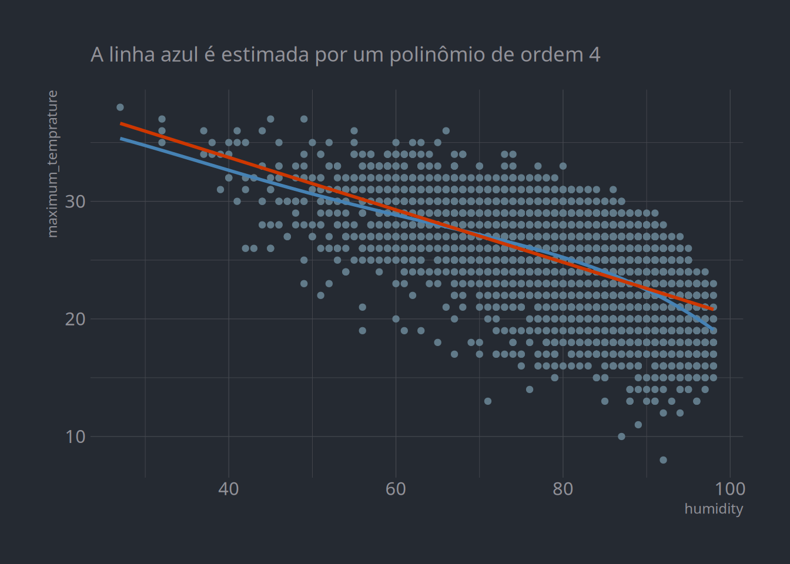
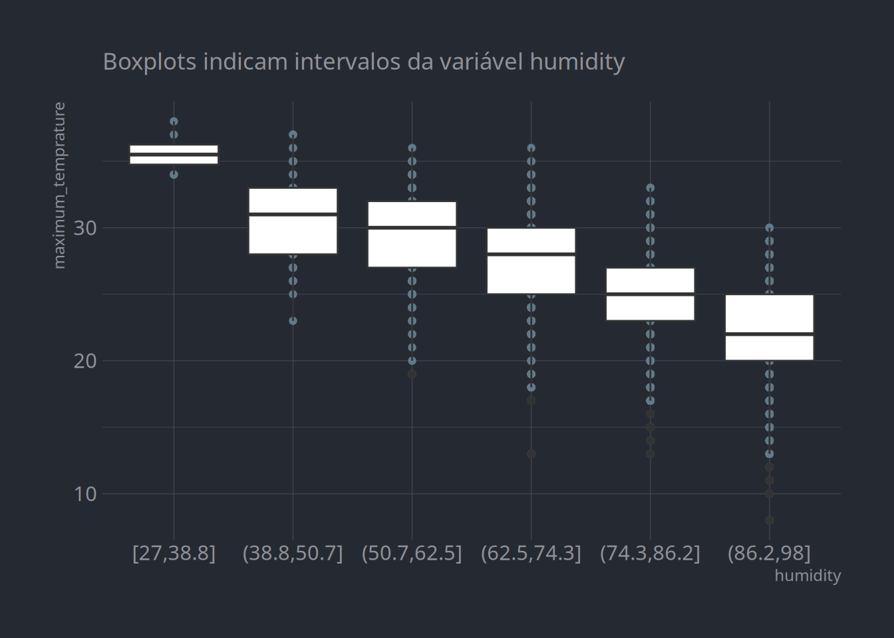
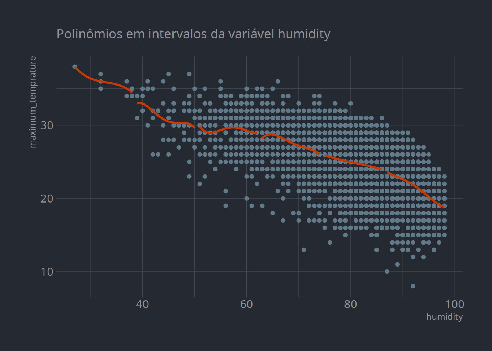
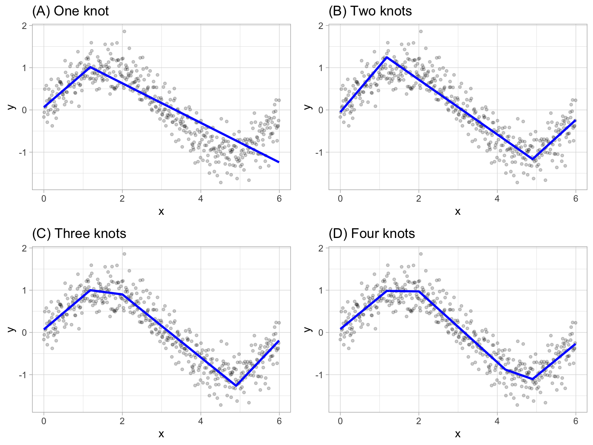
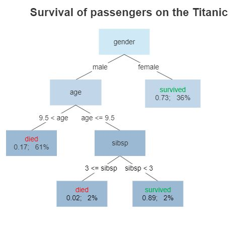

Modelos lineares, ou extensões deles, geralmente são suficientes para conseguirmos bons desempenhos em problemas de classificação e regressão. No mais das vezes, seu uso é o mais justificado também: eles são mais simples e rápidos para treinar e mais fáceis de diagnosticar e interpretar. No entanto, especialmente para problemas nos quais temos muitos preditores com pouca associação com targets, usar modelos não-lineares pode ser uma boa alternativa, ainda que geralmente ao custo de termos mais tempo de treino e menos controle de diagnóstico.
Nesta aula, estudaremos variações simples de modelos lineares, que permitem fazermos recortes arbitrários nas escalas de variáveis – como spinelines – para, então, começarmos a estudar modelos que combinam diferentes variáveis para aumentar o espaço vetorial das nossas features (ainda que frequentemente ao custo de overfitting. Também avançaremos no uso de pipelines e cobriremos brevemente o que são árvores de decisão, um tipo de algoritmo bastante útil para modelar relações não-lineares e interações complexas.
Feature engineering
Os principais modelos não-lineares são simples extensões de modelos lineares que diferem principalmente em relação à especificação dos modelos, isto é, à transformação das features que usamos. Isso difere, portanto, do que vimos até aqui: para cada aula, em geral vimos algoritmos e modelos diferentes. Agora, o principal é a preparação e seleção de features, o que costuma ser chamado na área de Ciência de Dados de feature engineering.
Polinômios
Quando temos uma relação bivariada que não é linear, o mais comum é usarmos preditores elevados em alguma potência, isto é, polinômios:
Recorrendo aos dados climático de São Bernardo do Campo, que já usamos em aulas anteriores, por exemplo, é possível visualizar a diferença do modelo acima, indicado pela curva azul, em relação a um modelo linear, indicado em vermelho.
Código
link <-"https://raw.githubusercontent.com/jacobwright32/Web_Scraper_AI_Core_Project/bb4865ae568e23ab8fadb6ea58cf117df2164ef3/web%20scraping/Cleaned%20Data/Brazil_Sao%20Bernardo%20Do%20Campo_Cleaned.csv"dados <- readr::read_csv(link)library(tidyverse)dados %>%ggplot(aes(x = humidity, y = maximum_temprature)) +geom_point() +geom_smooth(method ="lm", se = F, color ="steelblue", formula = y ~ x +I(x^2) +I(x^3) +I(x^4)) +geom_smooth(method ="lm", se = F, color ="orangered3") + hrbrthemes::theme_ft_rc() +labs(subtitle ="A linha azul é estimada por um polinômio de ordem 4")

Temperatura máxima vs. humidity
É possível notar que o modelo não-linear captura melhor o efeito negativo que é potencializado no final da distribuição. Outra possibilidade é dividir a extensão do preditor em intervalos, bins, e usá-los como variáveis categóricas que estimarão a média dos valores do target:
Código
dados %>%mutate(humidity =cut_interval(humidity, 6)) %>%ggplot(aes(x = humidity, y = maximum_temprature)) +geom_point() +geom_boxplot() + hrbrthemes::theme_ft_rc() +labs(subtitle ="Boxplots indicam intervalos da variável humidity")

Temperatura máxima vs. humidity
Ou, ainda, é possível combinar as duas abordagens como em aplicações de spinelines, que cortam as features em faixas e, em casa uma, estima polinômios:
Código
dados %>%mutate(humidity2 =cut_interval(humidity, 6)) %>%ggplot(aes(x = humidity, y = maximum_temprature, group = humidity2)) +geom_point() +geom_smooth(method ="lm", se = F, color ="orangered3", formula = y ~ x +I(x^2) +I(x^3) +I(x^4)) + hrbrthemes::theme_ft_rc() +labs(subtitle ="Polinômios em intervalos da variável humidity")

Temperatura máxima vs. humidity
Modelos não-lineares
Há alguns algoritmos que implementam, de forma automática, o pré-processamento de variáveis para criar polinômios, bins e interações entre variáveis. No sklearn, por exemplo, existem funções de pré-processamento de polinômios como sklearn.preprocessing.PolynomialFeatures, assim como no mlr3 há o quantilebins, que divide variáveis em espaços categóricos.
Também há modelos que trabalham para modelar relações complexas, não-lineares, de forma automatizada. O principal deles é o Multivariate Adaptive Regression Splines (MARS), que automaticamente encontra a melhor forma de criar bins (ou knots) para estimar \(N\) modelos lineares. Isso é feito de forma iterativa, o que significa que o modelo minimiza uma função para selecionar melhores knots (em certo sentido, MARS é um tipo de ensemble, que veremos detidamente na próxima aula). Visualmente, o resultado do MARS é mais ou menos esse (em um caso bivariado):

Exemplo do MARS
Em R, é possível implementar o MARS com o algoritmo regr.earth no pacote mlr3. Em Python, é necessário instalar a lib py-earth com sudo pip install sklearn-contrib-py-earth e usar from pyearth import Earth normalmente, como qualquer outro modelo do sklearn.1
1 É possível que a instalação do Earth dê problemas variados por conta de dependências.
Pipelines
Como vimos na última aula, pré-processamento é essencial, mas geralmente toma muitas linhas de código, problema que é ainda mais agudo quando queremos comparar o desempenho de diferentes modelos – lembrando que é necessário pré-processar amostras de treino e teste separadamente quando usamos processamentos que introduzem modificações relacionais, que dependem de parâmetros da base como um todo.
É por conta disso que a maioria dos frameworks de aprendizado de máquina incluem funções que facilitam as tarefas de pré-processamento e comparação de modelos. No sklearn, como vimos na última aula, temos a Pipeline que serve para isso e, no mlr3, temos grafos implementados por meio da função po e dos pipe operators.
No exemplo abaixo, implementamos uma pipeline para estandarizar variáveis contínuas para, então, treinar modelos lineares:
# Carrega pacoteslibrary(tidyverse)library(mlr3verse)# Carrega dadoslink <-"https://raw.githubusercontent.com/jacobwright32/Web_Scraper_AI_Core_Project/bb4865ae568e23ab8fadb6ea58cf117df2164ef3/web%20scraping/Cleaned%20Data/Brazil_Sao%20Bernardo%20Do%20Campo_Cleaned.csv"dados <- readr::read_csv(link) %>%select_if(is.numeric)# Define a tasktsk <-as_task_regr(maximum_temprature ~ ., data = dados)# Cria uma pipeline simplesgr <-po("scale") %>>%po("learner", learner =lrn("regr.lm")) %>%as_learner()# Treina a pipeline com 'benchmark_grid' e calcula metrica de validacaodesign <-benchmark_grid(tasks = tsk,learners =list(gr),resamplings =rsmp("holdout", ratio =0.7))resultados <-benchmark(design)resultados$score(msr("regr.rmse"))
from sklearn.linear_model import LinearRegressionfrom sklearn.model_selection import train_test_splitfrom sklearn.preprocessing import StandardScalerfrom sklearn.metrics import mean_squared_errorfrom sklearn.pipeline import Pipelineimport pandas as pd# Carrega dados e separa as amoastraslink ='https://raw.githubusercontent.com/jacobwright32/Web_Scraper_AI_Core_Project/bb4865ae568e23ab8fadb6ea58cf117df2164ef3/web%20scraping/Cleaned%20Data/Brazil_Sao%20Bernardo%20Do%20Campo_Cleaned.csv'dados = pd.read_csv(link).select_dtypes(['number'])Y = dados['maximum_temprature']X = dados.loc[:, dados.columns !='maximum_temprature']X_treino, X_teste, Y_treino, Y_teste = train_test_split(X, Y)# Cria uma pipelinepipe = Pipeline([('scale', StandardScaler()), ('lm', LinearRegression())])# Treina o modelo, calcula o RMSEpipe.fit(X_treino, Y_treino)mean_squared_error(Y_teste, pipe.predict(X_teste))# Treina o modelo na base todapipe.fit(X, Y)
Com esse novo workflow, que é bem próximo do que usamos em aplicações reais (exceto pelo fato de ainda não usarmos estratégias melhores de resampling, de tuning e de pré-processamento), fica fácil encontrar o melhor modelo, treiná-lo na base completa e validá-lo em outra base. Por exemplo, podemos aplicar o novo modelo para predizer a maximum_temprature de Campinas:
# Usa uma amostra de validacao diferentevalidacao <-read_csv("https://raw.githubusercontent.com/jacobwright32/Web_Scraper_AI_Core_Project/master/web%20scraping/Cleaned%20Data/Brazil_Campinas_Cleaned.csv")modelo <- gr$train(tsk)pred <- modelo$predict_newdata(validacao)validacao$pred <- pred$responsepred$score(msr("classif.fbeta"))
# Carrega dados de validacaolink ='"https://raw.githubusercontent.com/jacobwright32/Web_Scraper_AI_Core_Project/master/web%20scraping/Cleaned%20Data/Brazil_Campinas_Cleaned.csv"'validacao = pd.read_csv(link).select_dtypes(['number'])Y_val = validacao['maximum_temprature']X_val = validacao.loc[:, validacao.columns !='maximum_temprature']# Faz predicoes na base de validacaopred = pipe.predict(X_val)mean_squared_error(Y_val, pred)
Também conseguimos facilmente produzir polinômios:
# Cria uma pipeline com polinomiosgr2 <-po("scale") %>>%po("mutate") %>>%po("learner", learner =lrn("regr.lm")) %>%as_learner()gr2$param_set$values$mutate.mutation <-list(teste =~ cloud_coverage^2+ cloud_coverage^3,teste2 =~ pressure^2+ pressure^3)
# Cria uma pipeline com polinomiosfrom sklearn.preprocessing import PolynomialFeaturespipe = Pipeline([('scale', StandardScaler()), ('poly', PolynomialFeatures()), ('lm', LinearRegression())])
Árvores de decisão
Árvores de decisão partem de um princípio muito simples: elas particionam as features em combinações, ou regiões, e, com base nisso, fazem predições. Tomando a base de passageiros do Titanic (um dataset popular na Ciência de Dados), isso pode ser representado assim:

Representação de uma árvore de decisão
Em árvores de decisão, variáveis contínuas são transformadas em bins e combinadas com categoricas a partir de decision rules, ou split rules, que comandam como o algoritmo agrupará variáveis em regiões – pelo diagrama acima, dá para entender o nome do algoritmo. Por conta dessa estrutura flexível, não-paramétrica, árvores conseguem aprender funções mesmo quando estas envolvem interações complexas e não-lineares nos dados, mas isso geralmente vem associado a um maior overfitting e consequente aumento de variação (na próxima aula, veremos como lidar com isso).
Há diferentes algoritmos que implementam árvores de decisão, bem como diferentes regras de split e hiperparâmetros que configuram essas regras, mas, por hoje, nos deteremos em implementar versões simples: CART, de classification and regression trees, que está disponível no sklearn como sklearn.tree e, no mlr3, como rpart2
2 Os dois algoritmos, na verdade, são adaptações do algoritmo original. Além deles, há inúmeras outras variações.